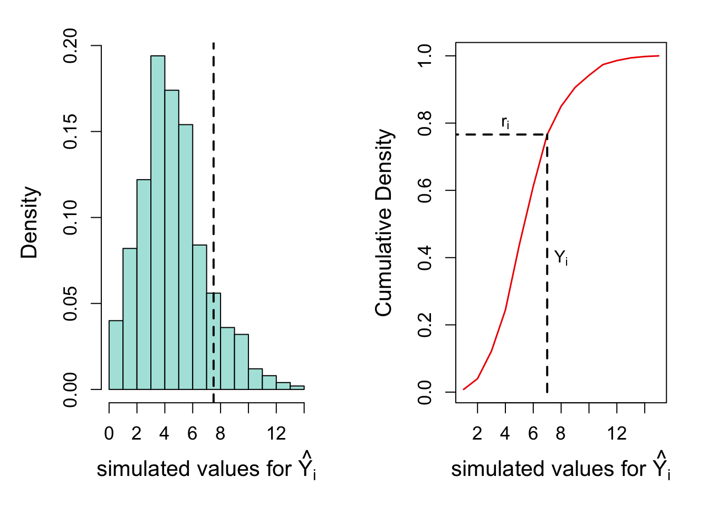
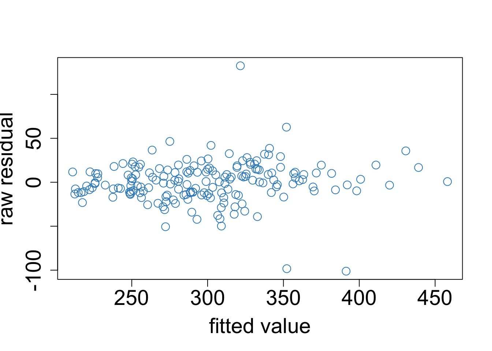
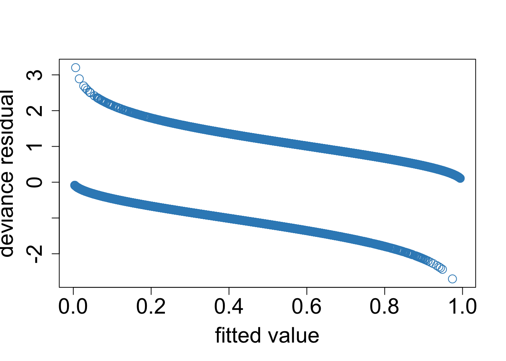
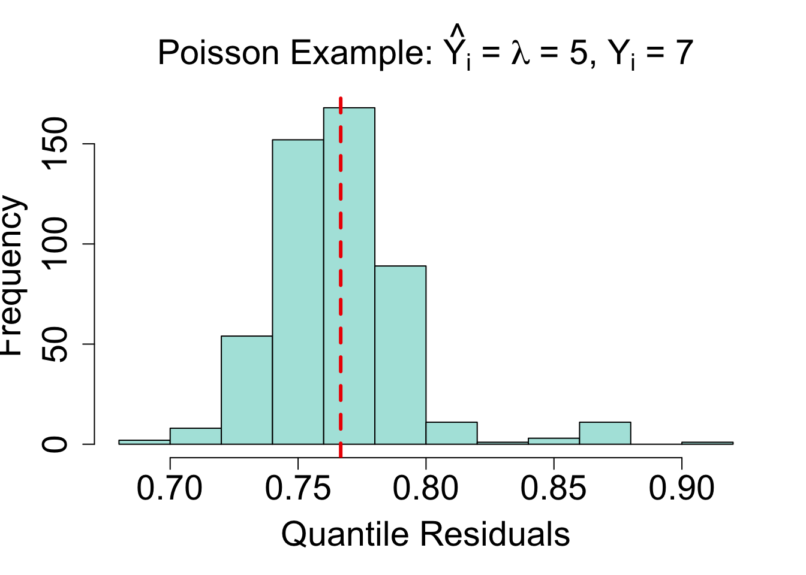
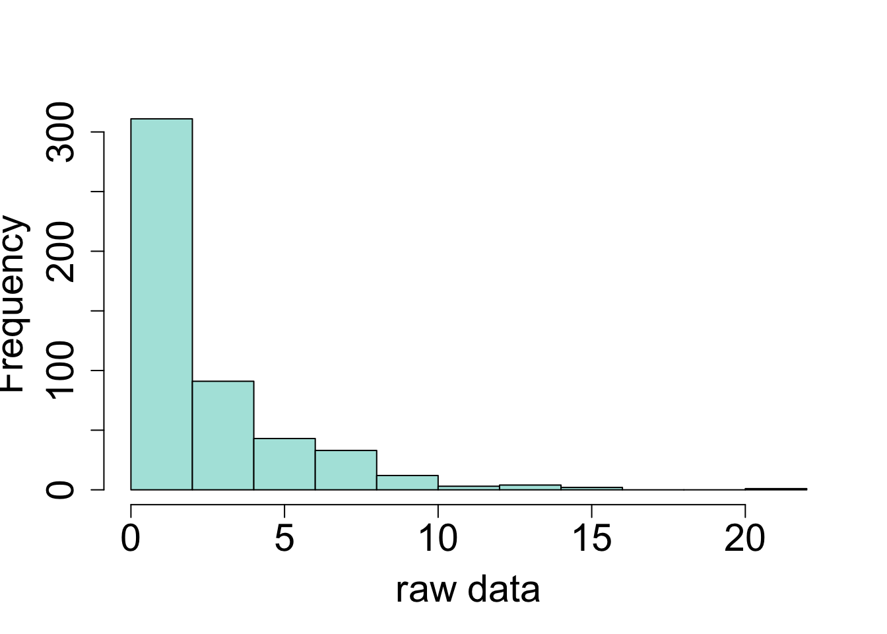
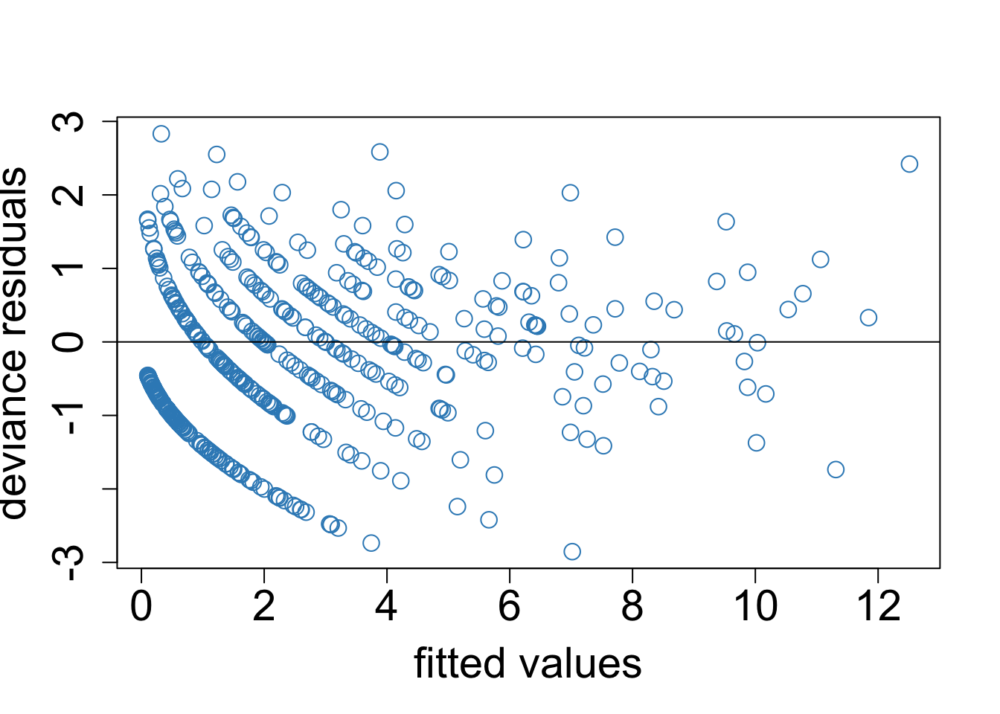
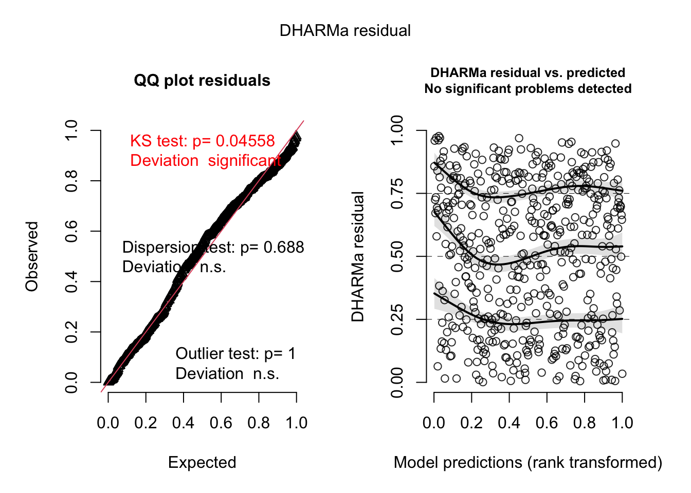
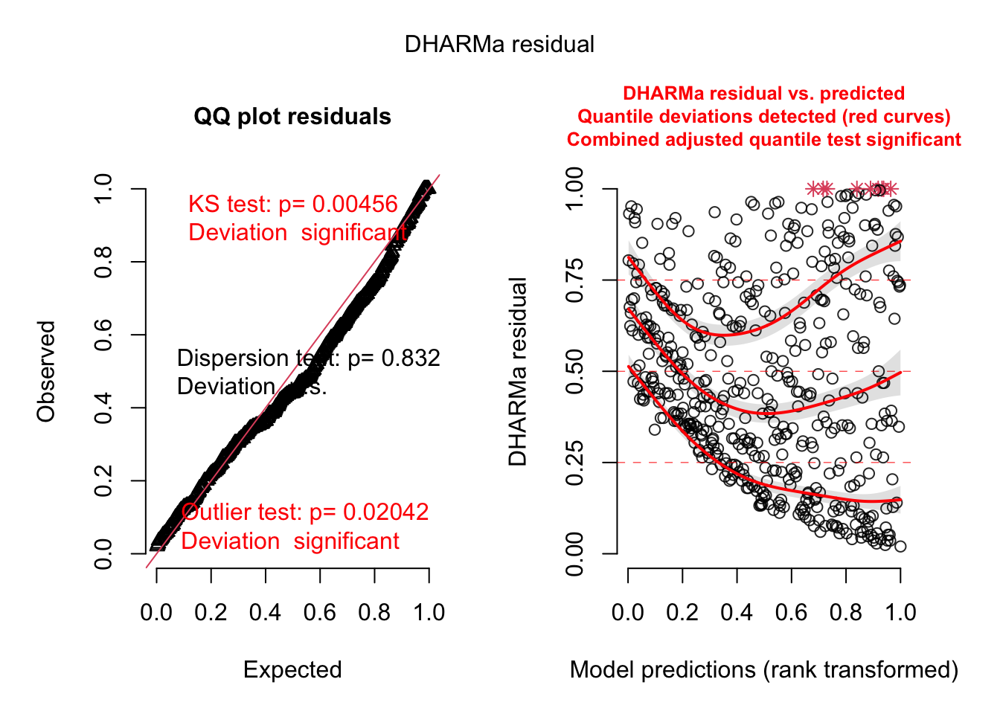
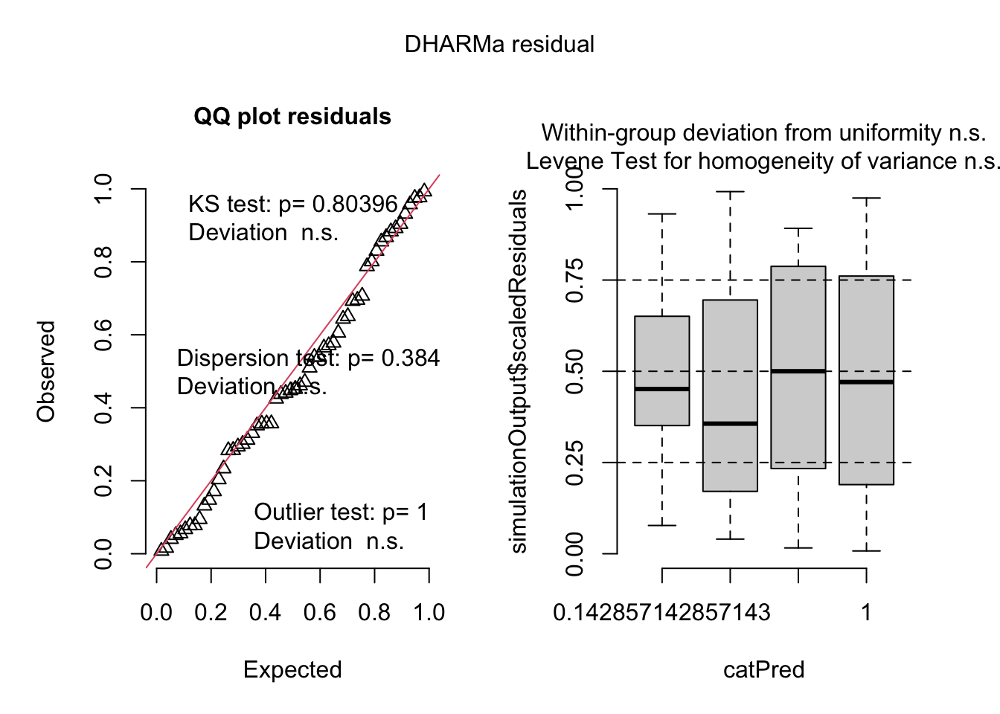
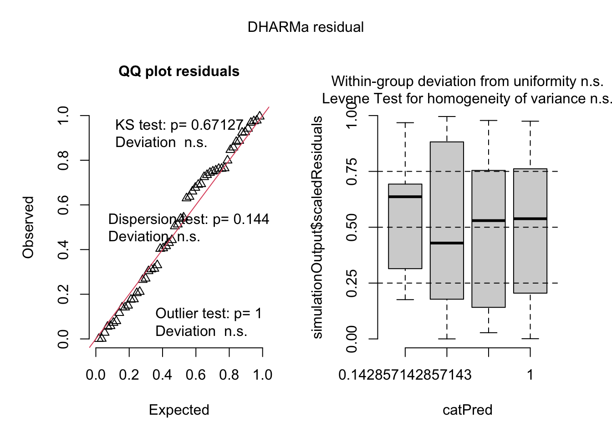

Using Randomized Quantile Residuals to Assess Model Fit of Generalized Linear Mixed Models
Randomized quantile residual was proposed in the literature [in 1996] to circumvent the…problems in traditional residuals [for generalized linear models]. However, this approach has not gained deserved awareness and attention, partly due to the lack of extensive empirical studies to investigate its performance.
–Feng et al, [-@Feng2017]
Introduction to the Problem
In the (general) linear mixed model framework,
\[\mathbf{Y = Xb + Za + \epsilon} \]
\(\mathbf{Y}\) is a vector of the values for the dependent variable, \(\mathbf{X}\) and \(\mathbf{Z}\) are the design matrices for fixed and random effects, respectively; \(\mathbf{b}\) and \(\mathbf{a}\) are the slopes for the fixed effects and random effects, respectively. The model residuals, \(\epsilon_i= \hat{Y_i} - Y_i\), are expected to follow a normal distribution with a mean of zero, some standard deviation and an assumption that these terms are identically and independently distributed (“iid”). These assumptions can be relaxed under certain circumstances (e.g. heterogeneous variance, repeated measures/longitudinal data), but when do hold, the residuals are uncorrelated with each other and share a common variance.
LMM assumptions:
\[\epsilon_i \sim N(0, \sigma^2 \mathbf{I_n}) \] \[a \sim N(0, \sigma_a^2) \]
\[ y_i|a_i \sim𝑁(x_i \beta, \sigma^2/r_i) \]
These assumptions can be quickly assessed by plotting the residuals versus the fitted values and generating a qq-plot.

It is difficult to examine modelling assumptions in GLMMs using the same standard residual plots developed for general linear models. Model residuals in GLMMs are not expected to be normally distributed (the log-normal model being an exception) and may have no distributional assumptions at all. Furthermore, canonical relationship between mean and variance for some distributions as well as distributions for discrete outcomes can result in non-nonsensical plots that lack diagnostic capabilities for GLMMs. Furthermore, goodness of fit tests are not valid for non-Gaussian linear models [@feng].
Alternatives to the standard residuals have been developed included Pearson, studentized and deviation residuals.
Types of residuals
Raw: \[\epsilon_i = Y_i - \hat{Y_i} \]
Pearson/Scaled:
\[ \epsilon_i = \frac {Y_i - \hat{Y_i}} {sd(Y_i)} \]
Deviance
\[ \epsilon_i = sign(Y_i - \hat{Y_i})\sqrt{d_i} \] and
\[ d_i = \frac {Y_i - \hat{Y_i}} {\sigma} \] (The Pearson residual for a normally-distributed variable)
These take different scaling approaches in order to decouple the relationship between the fitted values and the residual variance. Plots of residuals of all types (e.g., Pearson, deviance) from GLMMs are less amenable to direct interpretation. In such cases, detecting deviations from model expectations such as overdispersion, underdispersion or zero-inflation is difficult, and standard goodness of fit tests are not valid.

Since conventional residual plots are sometimes useless for GLMMs, what tools do work? And more saliently, what modelling assumptions of GLMMs should practitioners evaluate?
Randomized Quantile Residuals
Randomized quantile residuals are an alternative type of residuals specifically developed for generalized linear models. They were first defined by Dunn and Smyth [-@dunn1996]: and later implemented in their package “statmod” [-@statmod]. They are calculated by simulating data for each data point using the fitted GLMM for the distribution and its parameters and obtaining the quantile for each observation from the cumulative distribution function of the simulated data. Thus, quantile residuals are a measure of how well the data conform to the specified model and distribution.
Quantile residuals are calculated following this procedure:
For \(y_1,...,y_n\) responses, they follow a probability distribution with parameters \(\mu\) and \(\phi\). \[y_i \sim \mathcal{P}(\mu_i, \phi)\]
Under the cumulative distribution function for that probability distribution, \(F(y; \mu, \phi)\), the residuals, \(u_i\) are calculated by sampling within an observation-specific uniform distribution and then calculating the z-score from that.
Residuals: \(r_{i,q} = \Phi^{-1}(u_i)\)
Residual quantiles: \(u_i \sim \mathcal{U}(a_i, b_i]\)
Where:
\[a_i = lim_{y \rightarrow y_i} F(y; \hat{\mu_i}, \hat{\phi})\]
\[ b_i = F(y_i; \hat{\mu_i}, \hat{\phi}) \]
On a practical level, \(a_i\) and \(b_i\) can be described as thus:
For a discontinuous \(F\):
- \(a_i = Pr(Y < y_i)\)
- \(b_i = Pr(Y <= y_i)\)
- (a, b]
For a continuous \(F\):
- \(a=b\)
For all \(F(y_i; \mu_i, \phi)\), \(u_i\) are uniformly distributed if the model is correct. The quantile residuals, \(r_i\), converge to a normal distribution when parameters are consistently estimated, and under large samples, are iid.
The Probit distribution, \(\Phi(x)\) returns a probability p, and \(\Phi^{-1}(p)\) returns the z-score. The process, first described by Dunn and Smyth [-@dunn1996], was later expanded upon by Warton et all [-@warton2017] and named “probability integral transform” residuals (abbreviated “PIT” by the authors). While Dunn and Smyth’s version uses a half open interval for (a, b], Warton et al’s method is closed [a, b].
Randomization is used to produce continuously distributed residuals when the response is discrete or has a discrete component. This means that the quantile residuals will vary from one realization to another for a given data set and fitted model. –Dunn & Smythe (@Dunn1996)
Dunn and Smythe originally recommend running at least 4 quantile samples per observation. Nowadays, the current recommendation (and default behavior of most software) is to run hundreds of simulations per observation.
Quantile residuals can be interpreted similarly to common diagnostic residuals plots such as the q-q plot and the residual-versus-fitted values plot. Thus, randomized quantile residuals permit users to evaluate how well the data conform to model distributional assumptions and model parameter expectations.
This method is implemented in the R packages “statmod” for glm objects [@statmod] and by “DHARMa” for many linear modelling object types [@dharma]. Since DHARMa has broad compatibility with many GLMM modelling packages and is widely used by researchers, functionality from that package will be the focus for the rest of this chapter.
DHARMa (Diagnostics for Hierarchical Regression Models)
DHARMa is a widely-used package for GLMM model diagnostics. It implements quantile residuals as described by Dunn and Smythe with a few alterations already alluded to:
- the residuals are kept on the uniform distribution bounded by zero and 1 by default; they are not back-transformed to normally-distributed Z-scores automatically, although there is functionality within the package to that.
- Unlike the Dunn and Smyth quantile residuals, both ends of the distribution are closed: [0,1].
- in the default settings, 250 simulations are run for each observation in the data set.
The DHARMa Process
- Model a process using a generalized linear model with a chosen distribution and link function.
\[\mathbf{Y = X\beta+Za}\] \[ \mathbf{Y|a\sim G(\mu, R)} \]
“G” is generalized term denoting any distribution with shape and scale parameters
linear predictor: \(\mathbf{\eta = X\beta}\)
fitted value: \(E(Y) = \mu\)
Link function: \(\eta = g(\mu)\)
- For each observation in the data set, simulate new observations using fitted value as the mean and model parameters (e.g. shape, scale) for the other distributional parameters.
\[ Y_i \sim G(\hat{\mu_i}, \hat{\phi}) \]
- Calculate the quantile for the cumulative distribution function
\[ r_{i} = F(y_i; \hat{\mu_i}, \hat{\phi} )\]
This process is valid for Gaussian-distributed variables. DHARMa runs 250 simulations per observation by default; the documentation recommends running up to 1000 simulations per observation in the data set.
Expectations of the Quantile Residuals
\[ r_{ij} \sim Uniform(0,1) \]
\(r_{ij} = 0\): everything is larger
\(r_{ij} = 1\): everything is smaller
\(r_{ij} = 0.5\): right in the middle
Quantile Residuals for a Poisson-Distributed Variable
Assume we have a Poisson-distributed variable with the following conditions:
\[ \hat{Y} = \lambda = 5, \quad Y_i = 7\] In a data set with 500 simulated observations, we can calculate the quantile for an observed value of 7 given the mean and variance are 5.
For a single observation, a range of quantiles residuals will result from the simulations. In the column margin is an example of different residuals that results for the conditions of \(F(y_i; \hat{\mu}) \sim Poisson(\mu)\) where \(\hat{\mu} = 5\) and \(y_i = 7\).

DHARMa example for a GLMM with a Poisson-distributed variable
It always helps to see an example. Below, the DHARMa package itself is used to simulate a data set with a single random effect of “group” (10 levels), a fixed effect “Environment1”, and the Poisson-distributed response variable, “observedResponse”, with a scale parameter of 3 and no overdispersion.
library(DHARMa)
testData = createData(sampleSize = 500,
fixedEffects = 1,
numGroups = 10,
randomEffectVariance = 1,
overdispersion = 0,
family = poisson(), scale = 3)
head(testData) ID observedResponse Environment1 group time x y
1 1 7 0.5959065 1 380 0.8049826 0.01414461
2 2 5 0.6961288 1 362 0.4479991 0.36319843
3 3 1 -0.8304859 1 115 0.1707358 0.42344192
4 4 6 0.8395604 1 203 0.3717101 0.05373488
5 5 7 0.5947795 1 379 0.7587795 0.59538846
6 6 2 -0.1849098 1 414 0.2231586 0.86521314Next, the data set is analyzed correctly using a GLMM model:
library(lme4)
rightModel <- glmer(observedResponse ~ Environment1 + (1|group) ,
family = "poisson", data = testData)
wrongModel <- lmer(observedResponse ~ Environment1 + (1|group) ,
data = testData) 
The standard residual plot for both deviance residuals is predictable a bit weird and hard to interpret. The plot using Pearson residuals is any more diagnostic.
Now, let’s Look at the DHARMa quantile residual output for the correctly specified model:
library(DHARMa)
sr <- simulateResiduals(rightModel, plot = TRUE)Warning in newton(lsp = lsp, X = G$X, y = G$y, Eb = G$Eb, UrS = G$UrS, L = G$L,
: Fitting terminated with step failure - check results carefully
There is a considerable amount of information here, so let’s go through it one element at a time.
Default DHARMa Output
These plots are the results of the previously described randomized quantile residual simulations. By default, 250 simulations are conducted per observation, and simulations are conducted at the last stochastic level (i.e. across all random effects that enter the Poisson process. The simulations are saved to an object so they can re-used if necessary for model diagnostic tests and plots such as for over- or underdispersion, uniformity, zero inflation, and categorical dependence among the independent variables.
The qq-plot on the left is comparing observed residual “quantiles” (these are actually probabilities) with expected quantiles that were generated assuming a uniform distribution (0, 1) simulated with stats::punif(). This plot can be individually called with plotQQunif(). It is automatically testing for uniformity, outliers and dispersion. Uniformity is evaluated with the KS (Kolmogorov-Smirnov) test, using the function stats::ks.test().
The default “Dispersion test” present the results of a DHARMa bootstrap approach, comparing the variance of the observed raw residuals versus the variance of the simulated residuals (i.e. simulated - predicted values), where both are scaled to the mean simulated variance. Values close indicate conformation to expectations; values greater than one provide evidence of overdispersion and values less than one indicate underdispersion. This is the process for a fully conditional model. An unconditional model uses the squared Pearson residuals to calculate and compare approximate deviances. This can be computationally intensive and requires that the modelling package furnish Pearson residuals. In both cases, the p-value is the empirical proportion a simulated values is greater, less than or both compared to the observed value. Another approach is enabled using Pearson residuals described by Ben Bolker as a “crude” and “approximate” estimation in GLMM FAQ’s. This uses the squared sum of the Pearson residuals and error degrees of freedom in the Chi-square density function to estimate the probability of over- or under-dispersion. All dispersion tests implemented in DHARMa are by default two-sided, evaluating both overdispersion and underdispersion. This can be adjusted in the function arguments if only one approach is needed.
the Outlier Test is a bit tricky to interpret. DHARMa defines “outliers” as any observed value that is zero (all simulated data are larger) or 1 (all simulated data are smaller);1 thus, no information on magnitude is given. The outlier test runs a binomial test where the expected number of outliers is the inverse of the number of simulations plus 1 (\(1/(nSim + 1)\)). The DHARMa manual recommends that users view data labelled as “outliers” by DHARMa with caution as there is no way to determine to what extent they are truly outlying values. There is also a bootstrap procedure that empirically calculates the number of expected outliers versus how many were observed in the data.
The plot on the right is contrasting the quantile residuals versus the rank-transformed model predictions (where the rank transformation is rank of each prediction divided by the maximum rank, using the ties method of “average”). DHARMa conducts quantile tests at the 0.25, 0.5 and 0.75 quantiles by fitting splines (using the function qgam::qgam()) and testing for deviations from the expectation of a flat line. It does a Benjamini-Hochberg adjustment for multiple testing. This plot can be called with the function DHARMa::plotResiduals(), that has additional arguments for using absolute deviations (for testing heteroscedasticity), testing versus other specific factors in the model, and other arguments. When heteroscedasticity is present, the quantile lines are often not parallel. If the 0.25 quantile line trends towards zero and the 0.75 quantile line trends towards one, that is evidence of overdispersion.
It may also help to see DHARMa output for the incorrectly specified model.
Recall the correct model form is using a Poisson process:
rightModel <- glmer(observedResponse ~ Environment1 + (1|group) ,
family = "poisson", data = testData)When this relationship is evaluated using a LMM instead of a GLMM, the plots do indicate problems in the model fit:
wrongModel <- lmer(observedResponse ~ Environment1 + (1|group) ,
data = testData)
wr <- simulateResiduals(wrongModel, plot = TRUE)
The deviating quantile lines most certainly indicate the wrong model specification and a possible mean-residual relationship not fully accounted for in the statistical model. The residuals did not fail the dispersion test (two-sided, evaluating both under- and overdispersion), but, they did fail the Kolmogorov-Smirnov for uniformity of the residuals. Not every DHARMa residual panel can precisely diagnose the problems, especially for extreme examples like this when the entire distribution is wrong, but they can initiate a process of evaluating model misspecification.
Additional DHARMa Functionality to Consider
1. Testing for specific factors Residuals can be simulated for individuals predictors to evaluate the impact of specific factor levels on dispersion using the form = argument in plotResiduals() or the function testCategorical()). In such cases, boxplots are produced, between group variance is compared with a Levene’s test, and within-group variance is evaluated with individual KS tests (simulating a uniform distribution for each factor level).
1. Test for zero-inflation
A handy test evaluating how the number of zero’s occurring measure up to the number of zero’s expected for a given distribution and set of parameters. Like the other tests, the number of zero’s under the simulations are compared to the observed zeros and an empirical probability of having more or less zero’s than expected is reported.
1. Tests for spatial and temporal autocorrelation
Note that for any kind of autocorrelation, conditional simulations are recommended otherwise the plots or tests may indicate problems when there are not any. How to do this is addressed below. DHARMa has function for checking temporal autocorrelation, spatial autocorrelation, and autocorrelation due to phylogenetic relatedness. Spatial and phylogenetic use Moran’s I, using the distance matrix provided or calculating Euclidean distances. The temporal autocorrelation test conducts a Durbin-Watson test on the uniform scaled residuals and examines those residuals versus the time component.
DHARMa may indicate problems if there is autocorrelation unaccounted OR if the autocorrelation is not explicitly modeled in random effects. There may be inflated type I error of all tests, so DHARMa recommends either simulating conditional residuals or rotating the residuals.
Please note that this is not a comprehensive list of all functionality enabled in DHARMa.
Conditional and Marginal Models
The recommendation of DHARMa is to simulate all stochastic levels, so the resulting residuals can serve an omnibus test. The documentation for the package indicates that if the model is correctly specified, the simulated quantile residuals are diagnostic regardless of how many hierarchical levels simulated.
Given the tricky situation where low level random effects enter the model as Gaussian variables that are subsumed into the GLMM process, there may be interest in simulating lower level processes. The extent to which these simulations can be conducted depends on the R package being used. Conditional models where the predictions are conditioned on the random effects only are fully supported for lme4 and partially supported for glmmTMB (see GitHub issue for technical details). The DHARMa documentation warns that unconditional simulations can result in greater variability of the residuals and lower power to detect deviations from model expectations in higher-level processes. In particular, dispersion tests can be less sensitive using unconditional rather than conditional simulations.
Here are examples of conditional and unconditional residual simulations.
Example 1
The data set “cbpp” is from the lme4 package. It describes the incidence of cattle disease by time period and herd.
For glmmTMB, DHARMa conducts simulations on the conditional model by default.
library(glmmTMB)
data(cbpp)
g1 <- glmmTMB(cbind(incidence, size - incidence) ~ period + (1|herd),
data = cbpp,
family = binomial())Conditional Simulations:
r1a <- simulateResiduals(g1, plot = TRUE)
Unconditional Simulations
This is a bit more difficult to implement and is currently minimally documented. The simulation setting overall for an object must be manually set to only use fixed effects.
set_simcodes(g1$obj, val = "fix")
r1b <- simulateResiduals(g1, plot = TRUE)
The tests are similar, although the unconditional simulations indicate less variance between the time periods, possible masking some evidence of heteroscedasticity.
g1b <- glmmTMB(cbind(incidence, size - incidence) ~ period + (1|herd),
dispformula = ~ period,
data = cbpp,
family = binomial())glmmTMB objects have to be manually reset in order to conduct conditional simulations:
set_simcodes(g1$obj, val = "random") Example 2
Using same data set as example 1
g2 <- glmer(cbind(incidence, size - incidence) ~ period + (1 |herd),
data = cbpp,
family = binomial())For lme4, DHARMa conducts simulations on the marginal unconditional model by default.
Conditional Simulations:
r2a <- simulateResiduals(g2, plot=TRUE, re.form = NULL)This is equivalent to
simulateResiduals(g2, plot=TRUE, re.form = ~(1|herd))Unconditional Simulations
(default behavior)
r2b <- simulateResiduals(g2, plot = TRUE)This is equivalent to:
simulateResiduals(g2, plot=TRUE, re.form = ~0)
simulateResiduals(g2, plot=TRUE, re.form = NA)Limitations to Randomized Quantile Residuals
There is a relative paucity of peer-reviewed literature on randomized quantile residuals. As described previously, Dunn and Smyth [-@dunn] established the basic framework for calculating randomized quantile residuals in a short communication, which Warton et al and [-@warton] expanded on and determined that this approach works for sparse (zero enriched), overdispersed and high dimension data (i.e. many independent variables). Warton established that this residual approach only required information on the marginal distribution of data and did not require understanding the joint distributions of data from marginal models nor did it need information on correlation structures in clustered data. Feng et al [-@feng] further developed a stronger theoretical foundation for randomized quantile residuals and evaluated the ability of these to detect deviations from non-linearity, overdispersion, and zero-inflation. The residual patterns were such that deviations from linearity for discrete and continuous outcome variables, overdispersion and model misspecification with regard to zero inflation was detectable. However, there has been no published work exploring the performance of randomized quantile residuals in a mixed model context (general or generalized).
Randomized quantile residuals are not intended to work with any categorical outcome. However, Gerber and Craig [-@gerber] have developed diagnostic residuals for categorical outcomes variables and implemented this approach in the R package ‘MMLN’.
Conclusion and Best Practices
Assessing if a generalized linear mixed model (GLMM) is appropriately specified for a given data set and data generating process is challenging since often GLMMs have no defined distribution for model residuals. Randomized quantile residuals are a useful model diagnostic tool for those situations. This is implemented in the R package DHARMa and be manually written for SAS.
Randomized quantile residuals are a great diagnostic tool for GLMMs. These are helpful for diagnosing model misspecification and do work much better than conventional residuals for identifying problems.
Interpret DHARMa results as suggestions, not decisions. Although the hypothesis tests conducted by DHARMa provide an easy decision making tool, recall that no hypothesis provides an unambiguous answer. Outlier test results in particular should be treated with caution and not strictly diagnostic for individual observations.
Broad package compatibility Functionality in DHARMa depends on the simulation functions build into GLMM package that is being supported and what options are available through that package. Supported packages and function include:
lm(),glm(), lme4, glmmTMB, GLMMadaptive, mgcv, spaMM, mgcv, gamm4, brms, among other packages.Pay attention to other tests. When appropriate, make sure to evaluate candidate models for heteroscedasticity due to individual factors in the model, proper specification of a zero-inflation terms and autocorrelation (spatial or temporal). These are model specific and are not produced by the default DHARMa output, so the user must be aware and motivated.
Conditional simulations Commonly only the last stochastic level (e.g. Poisson) is simulated, conditional on the fitted random effects, serving as an omnibus test for model residuals. Unconditional simulations are dependent on the GLMM package itself and are implemented to varying extents in each package. These may be useful in certain scenarios, but overall lack diagnostic power.
Be aware of limitations. It should be noted that at this time, there is a lack of information on their performance and reliability across a broad range of conditions. The sensitivity of these residuals to modest model misspecification is unknown.
Categorical models Randomized quantile residuals are not intended for ordinal or multinomial models.
Read the manual. The documentation for DHARMa is extensive and detailed; reading this will enhance a user’s understanding of how to best use DHARMa and interpret its output.
References
(current manually inserted since this document is meant to be rendered as part of a website)
Dunn KP, and GK Smyth (1996). Randomized quantile residuals. Journal of Computational and Graphical Statistics 5, 1-10.
Feng et al (2017). Randomized quantile residuals: an omnibus model diagnostic tool with unified reference distribution. arXiv https://doi.org/10.48550/arXiv.1708.08527
Gerber EAE and BA Craig (2024) Residuals and diagnostics for multinomial regression models. Statistical Analysis and Data Mining: An ASA Data Science Journal 17:e11645. https://doi.org/10.1002/sam.11645
Warton DI, Thibaut L, Wang YA (2017) The PIT-trap—A “model-free” bootstrap procedure for inference about regression models with discrete, multivariate responses. PLOS ONE 12:1–18. https://doi.org/10.1371/journal.pone.0181790
Cut Material
If you think anything below is worth keeping, let me know.
** This stuff is from the Dunn & Smythe paper:**
Example: survival times of patients
(a continuous variable)
Survival: \(y_i \sim Exp(\mu_i)\)
\[ \text{log }\mu_i = \beta_0 + \beta_1 \text{ log } x_i \]
Quantile residuals:
\[ r_{i} = \Phi^{-1} \left\{ 1-exp(y_i/\hat{\mu_i}) \right\}\]
For Discontinuous CDF, \(F\)
\[r_i = \Phi^{-1}(u_i)\] \[ u_i \sim Uniform(a_i, b_j]\] \[a_i = lim_{y \uparrow y_i} F(y; \hat{\mu_i}, \hat{\phi})\]
\[ b_i = F(y_i; \hat{\mu_i}, \hat{\phi}) \]
Example: binomial trait
\[y_i \sim binomial(n, p_i) \]
\[ \text{logit} (p_i) = \beta_0 + \beta_1x_i \] \[r_i = \Phi^{-1}(u_i)\]
\[ u_i \sim Uniform(a_i, b_j] \]
\[a_i = lim_{y \uparrow y_i} F(y; n, \hat{p_i}) =\displaystyle\sum_{i=0}^{\lfloor k-1 \rfloor} \begin{pmatrix} n \\ i \end{pmatrix} p_i(1-p)^{n-i}\]
\[b_i = F(y_i; n, \hat{p_i}) =\displaystyle\sum_{i=0}^{\lfloor k \rfloor} \begin{pmatrix} n \\ i \end{pmatrix} p_i(1-p)^{n-i}\]
Footnotes
This is one reason why transforming these with the quantile function can be a misleading since probabilities of 0 and 1 end up as negative infinity and infinity, respectively. Amusingly, the outlier test is a 2-sided test. “Are there enough outliers?” is not something researchers ask frequently.↩︎